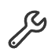

<header>
  <ion-toolbar>
    <ion-buttons slot="start">
      <ion-back-button defaultHref="/home"></ion-back-button>
    </ion-buttons>
    <h1>Estado de {{ device.name || 'dispositivo' }} </h1>
  </ion-toolbar>
</header>

<ion-content>
  <!-- AQUÍ DEBE DECIR SI ESTÁ HÚMEDO O SECO. SE OBTIENE DE LA INFO DEL BOTÓN SELECCIONADO EN HOME.PAGE -->
<h6 id="estado-text">{{ deviceStatus }}</h6>


<!-- AQUÍ DEBE IR UNA IMAGEN DE ACUERDO AL ESTADO (SECO O HÚMEDO) -->
<ion-content class="ion-padding">
  
</ion-content>
  
  <ion-tabs>
    <ion-tab-bar slot="bottom">
      <!-- ESTE TAB DEBE CAMBIAR A DECIR 'HORARIO'.
       Tal vez sea mejor que se llame 'TIPOS': (Implementar un mini menú que muestre varios perfiles de planta (tipos de planta)
       con datos ya cargados: nivel de tolerancia mínima de sequedad, es decir, que cargue el dato de cuán húmeda debe estar
       esa planta a la ESP32. Eso sería para el modo automático. Si se elige manual (por horario), entonces el tipo de planta no se toma en cuenta). -->
    <ion-tab-button tab="horario" id="open_horario_modal">
      <div class="horario_tab">
        
        Horario
      </div>
    </ion-tab-button>

    <ion-modal class="sht-modal" #modal trigger="open_horario_modal" [initialBreakpoint]="0.5" [breakpoints]="[0, 0.25, 0.5, 0.75]" [backdropBreakpoint]="0.5" (ionModalWillDismiss)="closeModal()">
      <ng-template>
        <ion-content class="contenido_horario">
          <div class="horario_container">
            <div class="horario_title">
              <h2 class="horario_text">Configuración del riego temporizado</h2>
            </div>
          </div>

          <br>

          <ion-item>
            <ion-label position="floating">Hora de inicio</ion-label>
            <ion-input type="number" [(ngModel)]="horaInicio"></ion-input>
          </ion-item>

          <ion-item>
            <ion-label position="floating">Hora de finalización</ion-label>
            <ion-input type="number" [(ngModel)]="horaFinal"></ion-input>
          </ion-item>

        </ion-content>
      </ng-template>
    </ion-modal>
    
    <!-- TAB INICIO -->
    <ion-tab-button tab="inicio" (click)="go_home()">
      <div class="inicio_tab">
        
        Inicio
      </div>
    </ion-tab-button>
    
    <!-- TAB CONFIGURACIÓN -->
    <ion-tab-button tab="config" id="open-conf_modal">
      <div class="conf_tab">
        
        Configuración
      </div>
    </ion-tab-button>
    
    <ion-modal class="sht-modal" #modal trigger="open-conf_modal" [initialBreakpoint]="0.5" [breakpoints]="[0, 0.25, 0.5, 0.75]" [backdropBreakpoint]="0.5">
      <ng-template>
        <ion-content class="contenido-conf">
          <div class="config-container">
            
            <!-- Div invisible para alinear los elementos -->
            <!-- <div class="invisible-div"></div> -->
            
            <div class="config-text">
              <h2 class="configuration">Configuración</h2>
            </div>
            
            <!-- <div class="edit-button">
              <ion-button class="ionEdit-button">
                
              </ion-button>
            </div> -->
            
          </div>
          <br>
          
          <!-- TOGGLE -->
          <!-- <ion-toggle [checked]="true">Riego automático</ion-toggle>
            <br>
            <br>
            <ion-toggle>Riego manual</ion-toggle> -->
            
            
            <!-- RADIO BUTTONS -->
            <ion-radio-group [(ngModel)]="selectedOption" (ionChange)="onRadioChange($event)">
              <ion-item class="per-itm">
                <ion-label class="lab-conf">Riego automático</ion-label>
                <ion-radio slot="start" value="1"></ion-radio>
              </ion-item>
              <br>
              <br>
              <ion-item>
                <ion-label>Riego temporizado (24h)</ion-label>
                <ion-radio slot="start" value="2"></ion-radio>
              </ion-item>
            </ion-radio-group>
            
            <!-- <div *ngIf="selectedOption === '2'">
              <ion-item>
                <ion-label position="floating">Hora de inicio</ion-label>
                <ion-input type="number"></ion-input>
              </ion-item>
              
              <ion-item>
                <ion-label position="floating">Hora de final</ion-label>
              <ion-input type="number"></ion-input>
            </ion-item>
          </div> -->
          
        </ion-content>
      </ng-template>
    </ion-modal>
    
    
  </ion-tab-bar>
</ion-tabs>
</ion-content>